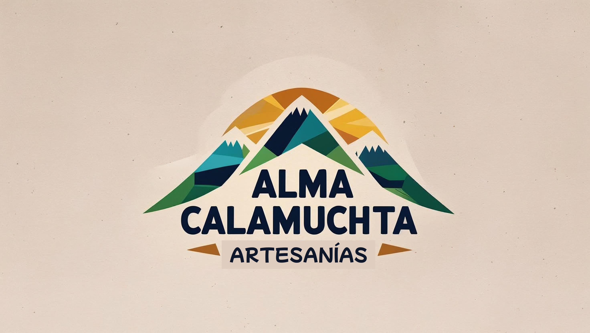
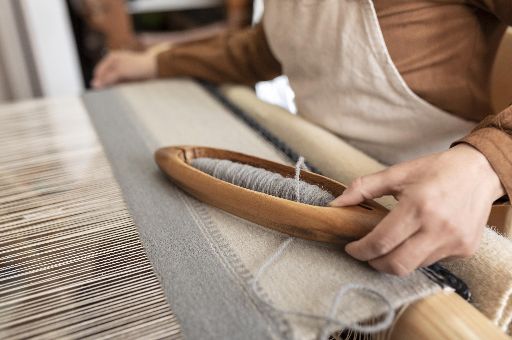

Nuestra Historia
En el corazón de las sierras de Córdoba, Argentina, nació Alma Calamuchita, un emprendimiento que respira la esencia de la naturaleza, la tradición y la pasión por lo hecho a mano. Detrás de este proyecto están Evangelina Suárez y Sonia Madariaga, dos mujeres unidas por la amistad y el amor por las artesanías. Evangelina, artista textil y amante de los tintes naturales, siempre soñó con compartir la calidez de sus creaciones más allá de su taller. Sonia, diseñadora y emprendedora, encontró en la artesanía una forma de conectar con sus raíces y poner en valor el trabajo de manos talentosas de la región. En 2022, decidieron dar vida a su sueño: crear una marca que no solo venda productos, sino que cuente historias. Así nació Alma Calamuchita, un nombre que homenajea el Valle de Calamuchita, donde ambas encuentran inspiración en los ríos cristalinos, los cerros y los aromas de monte. su propuesta se basa en piezas únicas: textiles, cerámicas, adornos y objetos decorativos, todos elaborados por manos locales y bajo prácticas sostenibles. Cada artículo refleja el tiempo, el cuidado y la identidad de su creadora.
Para llevar este espíritu más allá de las ferias y mercados, Evangelina y Sonia crearon, una tienda online donde se puede recorrer virtualmente su universo artesanal. A través de la web, envían sus creaciones a todo el país, llegando a hogares que valoran la calidez de lo auténtico. Hoy, Alma Calamuchita es más que un negocio: es una comunidad de artesanos, clientes y amantes de la cultura local que creen en un consumo consciente, en apoyar lo hecho a mano y en celebrar la belleza de lo simple. Su sueño sigue creciendo, tejido a mano, pieza por pieza, manteniendo viva la esencia de la tierra que les da nombre y raíz.